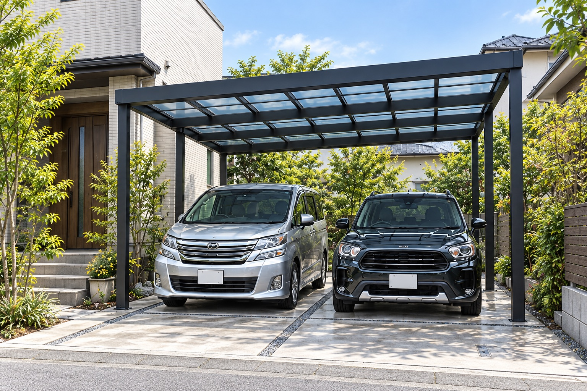
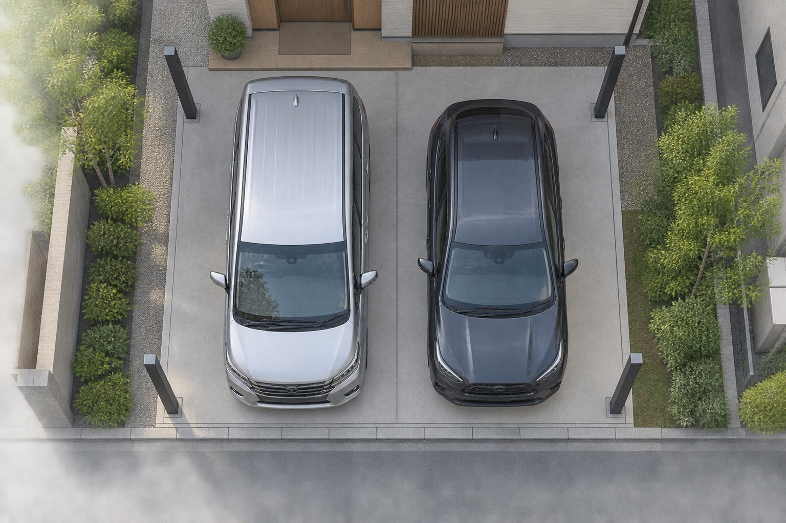
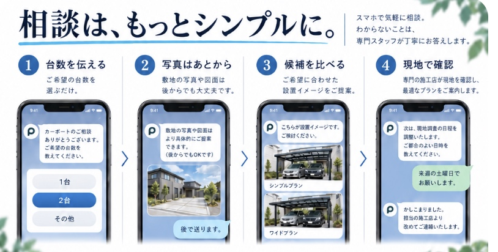
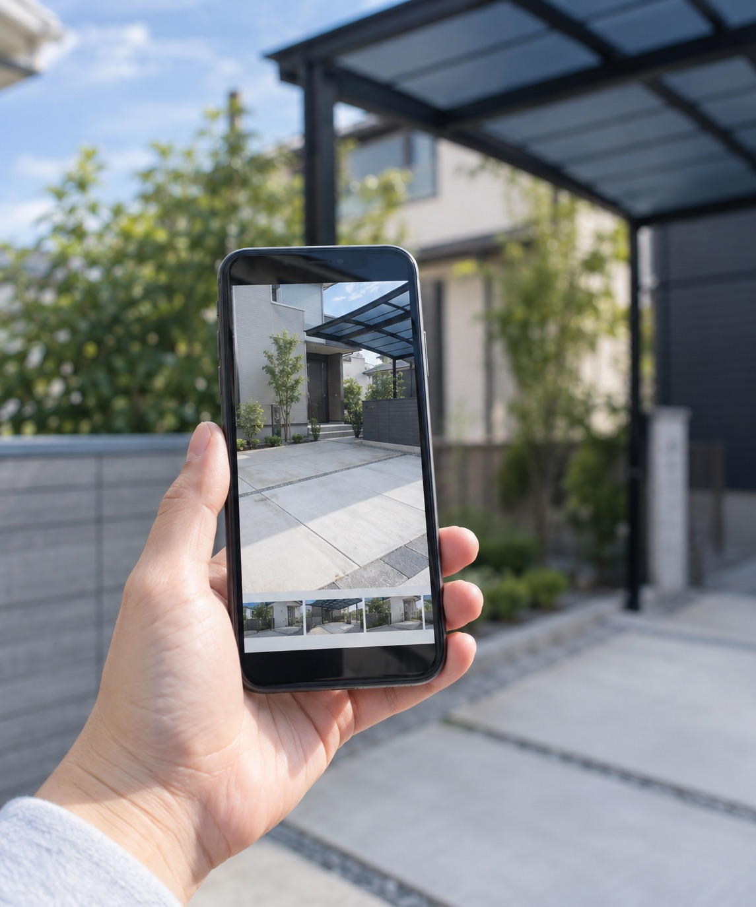
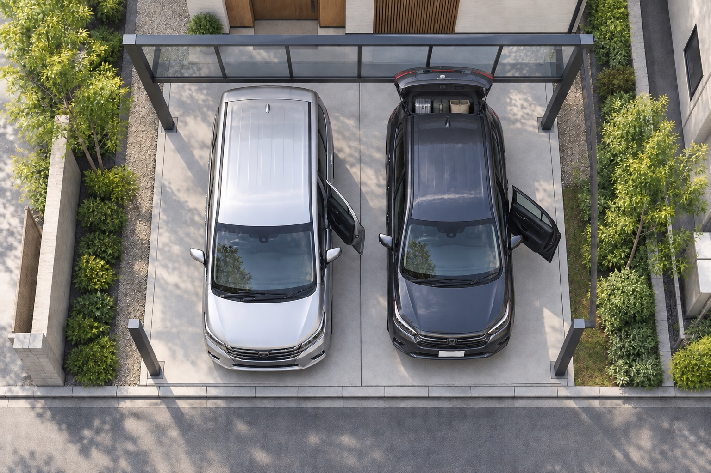
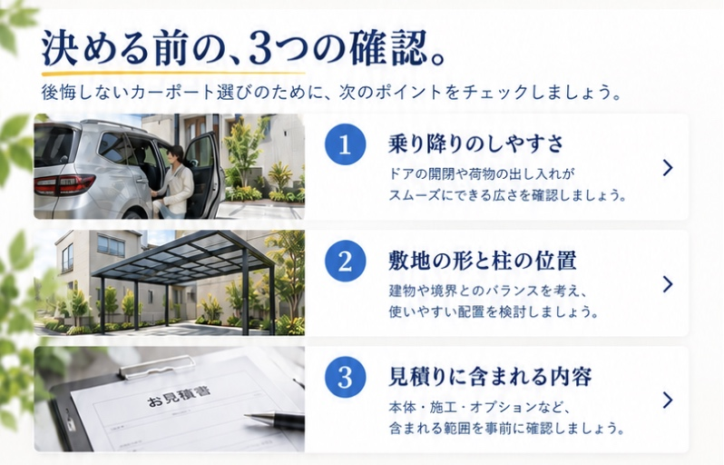
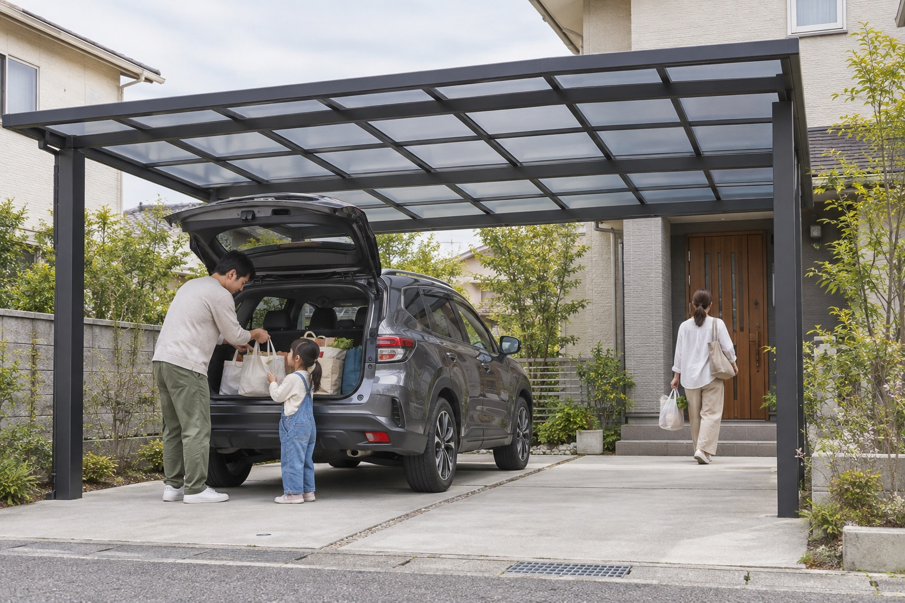

停めやすさから、
カーポートを選ぶ。車を守る。
その先の
暮らしまで。
毎日の乗り降りが、
もっと快適になる。条件に合うカーポートを、
価格とイメージから選べます。
家族のクルマと、
これからの暮らしに
ちょうどいい選択を。
福岡・九州／東海／関東エリアで相談受付

大切なのは、クルマと暮らしのちょうどいい距離。
Good
Everyday
設計イメージ／実施工写真ではありません
▤乗り降りしやすい
ゆとりのスペース
⌂敷地に合わせた
最適なプラン
♧住まいになじむ
デザイン
01 / 停めたあとまで考える
屋根の幅だけでは、
使いやすさは決まらない。家と車に、
ちょうどいい形を。
クルマのサイズ、ドアの開閉、柱の位置、前面道路からのアプローチまで。トータルで考えることが大切です。

ドアの開閉スペース乗り降りする側の余白柱の位置車の動線と重ならないか前面道路からの進入曲がる角度まで確認01 ドアを開く余白02 柱と車の距離03 道路からの入り方
※配置の考え方を示した図です。施工可否や実際の寸法は現地調査で確認します。
CHOOSE YOUR START
知りたいことから、始める。選び方は、ふたつ。
PLAN / 台数で見る選び方
1台でも、2台でも。
差が出るのは、停めたあと。
子どもを乗せる。荷物を積む。先に出発する。いつもの動きから、必要な余白と柱の位置を考えます。
写真は完成イメージです。以下は実施工事例ではなく、車種別の検討例です。
1台用毎日の使いやすさを、しっかりと。
1台用設計イメージ
1台用毎日の乗り降りも、雨の日の出入りもスムーズに。ミニバン1台を考えている方へ
車の横に、
人が動ける余白まで。
ドアが開くだけでは、乗り降りしやすいとは限りません。子どもを乗せる、ベビーカーを積む。人が立って動ける幅まで考えます。
- 幅
- ドアの開閉＋人が立つスペース
- 奥行・高さ
- 荷室のドアを開けた状態まで
- 配置
- 車を降りて、玄関へ歩く道筋
愛車に合う1台用プランを相談 →
2台用家族のクルマを、並べて快適に。
2台用設計イメージ
2台用家族の車を並べて、2台とも使いやすく。SUV＋ミニバンなど、2台を考えている方へ
2台並べるだけでなく、
2台とも使いやすく。
SUVとミニバンでは、必要な余白も違います。車同士の間隔、ドアと柱の位置、出発する順番まで見て、2台の配置を考えます。
- 幅
- 2台の車幅＋ドアを開ける余白
- 柱位置
- 道路から入るときの車の通り道
- 将来
- 買い替えたい車のサイズも考慮
2台とも使いやすいプランを相談 →
予算の中で、いちばん使いやすく。高い仕様を選ぶ前に、譲れない使い方を整理。「2台をゆったり停めたい。予算はこのくらい」から、サイズ・仕様・工事内容を検討します。
工事込みの総額を確認する →
PLUS CARPORT / 選ばれる理由
価格も、工事も。
見えるから選べる。
安さだけで選んで、使いにくさや想定外の工事に気づかないために。相談の段階から、比べる条件をそろえます。
01 / COMPARE本体価格だけでなく、
工事込みで選ぶ。
商品本体の金額だけでなく、基本施工と敷地ごとの工事を分けて確認。予算に合わせて、必要な仕様を整理します。
商品本体基本施工敷地ごとの工事
→比べる基準は工事込みの
税込総額
02 / CLARITYあとから慌てない。
工事の範囲を確認。
「どこまで含まれるか」をそろえて、正式見積もりを確認。保証や施工後の連絡先も、契約前に担当施工店へ確認できます。
- ⌂商品・仕様
- ⚒基本施工
- ＋追加工事
- ¥税込総額
- ◇保証内容
- ☎施工後の窓口
条件をそろえて相談する →
オーダーカーポート 02
ORDER MADE / PLUS CARPORT
既製品に合わせない。
暮らしに合わせる。
週末にバイクを手入れする。軽トラの荷台から、農具をしまう。
駐車スペース、収納、作業する場所をひとつの計画に。既製品では収まらない希望もご相談ください。
使い方に合わせた4つのプラン例です。画像はAI生成の設計イメージで、施工実績ではありません。
プラン例を横に見る
 バイクガレージ画像を拡大 ↗
バイクガレージ画像を拡大 ↗
01 バイクガレージ併設 プラン例
車を動かさずに、
バイクで出かけられる。
車とバイク、それぞれの出入口を確保。工具やヘルメットの収納、手入れをする場所も一緒に考えます。
- 合わせるところ
- バイクの通り道・整備の余白・収納
車とバイクの置き方を相談 →
 軽トラと倉庫画像を拡大 ↗
軽トラと倉庫画像を拡大 ↗
02 軽トラ・農具の倉庫併設 プラン例
積む、降ろす、しまう。
軽トラの隣で、ひと続きに。
農具や仕事道具を、使う場所のすぐそばへ。荷台の横で積み下ろしできる幅と、道具を出し入れする倉庫の間口を合わせて考えます。
- 合わせるところ
- 荷台まわりの幅・収納の間口と高さ
軽トラと倉庫の配置を相談 →
 屋上デッキ画像を拡大 ↗
屋上デッキ画像を拡大 ↗
03 屋上デッキ付き プラン例
駐車場の上に、
ひと息つける居場所を。
外でひと息ついたり、鉢植えを育てたり。駐車スペースを残しながら、敷地を立体的に使うプランです。
- 合わせるところ
- デッキの使い道・階段・支える構造
デッキ付きのプランを相談 →
 玄関までの屋根画像を拡大 ↗
玄関までの屋根画像を拡大 ↗
04 玄関までつながる屋根 プラン例
雨の日の帰宅を、
玄関まで気持ちよく。
買い物袋を持つ日も、子どもと帰る日も。乗り降りする場所から玄関まで屋根をつなぎ、人が通る幅と雨の吹き込みも考えて計画します。
- 合わせるところ
- ドアと柱の位置・屋根の形・通路幅
玄関までの動線を相談 →
図面より先に、やりたいことを。
「車を停めたままバイクを出したい」「農具を荷台の近くにしまいたい」。その希望から、必要な広さと配置を考えます。
対応できる形・構造・仕様は、敷地や建物、地域の条件を確認してご案内します。
LINEで相談できること 03
相談は、もっとシンプルに。相談は、
もっとシンプルに。
商品名や図面はまだなくても大丈夫。まずは停めたい車の台数や、使いたい場所を教えてください。

plus カーポート
カーポートのご相談ありがとうございます。ご希望の台数を教えてください。
1台用
2台用
まだ迷っている
plus カーポート
敷地全体が写る写真や図面があれば、お送りください。後からでも大丈夫です。

plus カーポート
ご希望に合わせた候補のイメージを確認します。
1台用のイメージ
2台用のイメージ
plus カーポート
候補を選んだら、現地調査と正式なお見積りをご案内します。
現地で確認すること敷地寸法・基礎・工事範囲施工店と費用をご案内
※相談の流れを示す画面イメージです。実際の返信・提案内容はご相談状況により異なります。
写真だけで設置可否や正確な金額は確定しません。現地で寸法・施工条件を確認してからご案内します。
商品が決まっていなければLINEから。価格を先に見たい方は、シミュレーターから始められます。
どちらも相談無料。現地調査・正式見積りへ進むまでは契約になりません。
AI設置イメージはご相談用の完成イメージです。施工可否・寸法・仕様を確定する設計図ではありません。
ご相談内容は、対応可否の確認と施工店の選定に使用します。施工店へ共有する前に、ご本人の同意を確認します。詳しくはプライバシーポリシーをご確認ください。
LINE相談画面を確認しています。
相談ポイント・送る文を準備する 任意
3つ選ぶと、確認したいことと相談文がまとまります。未定のままでも大丈夫です。
選んだ内容に応じた一般的な確認事項です。設置可否・寸法・費用を判定するものではありません。
この文をもとに、LINEで相談できます。
カーポートを検討しています。
愛車と使い方に合うプラン、工事込みの費用を相談したいです。
送るときに市区町村・車種が分かれば添えてください。写真はあとからで大丈夫です。
LINE相談ボタンへ戻る ↑
相談・施工の運営体制 04
相談窓口と施工担当を、
分かりやすく。相談から施工まで、
役割を明確に。
プラスカーポートは、みちしるべコンサルティング株式会社が運営するカーポート相談窓口です。ご希望を整理し、ご本人の同意を得たうえで、地域の加盟店・提携施工店へおつなぎします。
- 相談窓口プラスカーポート
車種・台数・使い方・設置予定地を確認。ご本人の同意を得て、対応できる地域の施工店へおつなぎします。
運営：みちしるべコンサルティング株式会社
- 施工担当地域の加盟店・提携施工店
敷地と施工条件を現地で確認し、商品・工事範囲・正式な費用をご案内。契約・施工・施工後の対応を担当します。
現地調査・正式見積り・契約・施工
現在の相談対応エリア
エリア内でも、施工店の対応状況や敷地・工事条件により対応できない場合があります。まずは設置予定地の市区町村をお知らせください。
契約主体、保証内容、施工後の窓口は、見積もり時に担当施工店から書面でご案内します。プラスカーポートから施工店へ個人情報を提供する場合は、事前にご本人の同意を確認します。
専門店のチェックポイント 05
次の愛車まで、
余裕を残す。
次は大きなSUVに。ルーフキャリアを付けて出かけたい。建てたあとも好きな車を選べるように、買い替えまで見据えてサイズと配置を考えます。
SPACE PLANNING
停めたあとも、
動きやすく。
ドアの開閉、荷物の出し入れ、家までの動きまで考えて、毎日使いやすい配置へ。
暮らしの先まで見据えた、ちょうどいいカーポートを。
住宅の外観建物までの動線と色合いドアの開閉家族が立つ余白リアハッチ車両後方の出し入れカーポートの柱車の通り道を避ける- 1住宅とのつながり
- 2ドアの開閉スペース
- 3後方のリアハッチ
- 4柱と車の距離
AI生成による配置イメージ／実際の寸法・施工条件は現地で確認します
幅・間口ドアを開けて、人が立てるか。
車幅に、乗り降りのスペースを加えて確認。2台用は、車と車の間にも余裕を見ます。
奥行・高さ荷室を開けて、荷物を出せるか。
全長・車高に加え、リアハッチを開けた位置やルーフキャリアの使用を確認します。
柱の位置いつもの駐車を、邪魔しないか。
前面道路からの進入角度、ハンドルを切る場所、運転席のドアとの位置関係を見ます。
住宅とのバランス愛車も、家の外観も引き立つか。
屋根の色や厚み、柱の見え方、玄関とのつながりまで含めて候補を比べます。
地域の風・積雪、敷地や施工の条件も含め、設置に適した仕様を確認します。
サイズ表の「間口・奥行・高さ」とは？
間口は幅方向、奥行は前後方向の寸法です。高さは商品により柱の高さなどを示します。実際に車や人が使える幅・高さは、屋根の外寸と異なるため、柱・梁を含めて確認します。
設置費用の考え方 06
本体価格だけで、決めない。
工事込みの総額で比べる。本体だけで
決めない。
工事込みで比べる。
同じ「2台用」でも、サイズや柱の方式、駐車場の状態で費用は変わります。本体・基本施工・追加工事の範囲をそろえ、税込総額で確認します。
「この予算なら、どこまで叶う？」もどうぞ。停めやすさ、外観、収納。譲れない条件から優先順位を決め、予算に合わせてサイズや仕様を比較します。
LINE予算に合うプランを相談→
購入前に確認したいこと 07
完成してから気づきたくない。
決める前の、3つの確認。決める前の、
3つの確認。

3つの確認を横に見る
- 01

2台とも停めた状態で、乗り降りできる？
1台ずつなら余裕があっても、並べると狭くなることがあります。運転席・助手席、両方を確認します。
- 02
その柱、いつも車が通る場所では？
駐車したあとの位置だけでなく、道路から入る途中の動きを確認します。
- 03
その見積もりで、どこまで工事できる？
本体・施工・追加工事・税込総額を確認。同じ条件にそろえると、候補を比較しやすくなります。
相談から施工まで 08
希望を話す。現地で確かめる。
納得してから、決める。LINEから相談。
納得してから決める。
ご相談の受付はプラスカーポートが行い、現地調査・見積もり・契約・施工は地域の加盟店または提携施工店が担当します。LINEの追加だけで契約になることはありません。
- 01
LINEで相談LINEで、いまの状況を送る
台数だけで相談を始められます。AI設置イメージを希望する場合は、敷地全体が写る写真を添付します。
- 02
条件を整理ご希望を整理し、施工店をご案内
対応可否を確認し、情報共有への同意後に地域の施工店へつなぎます。
- 03
現地調査・見積り担当施工店が現地を確認して、見積もり
寸法と施工条件を確認し、仕様・工事範囲・費用をご案内します。
- 04
担当施工店と契約し、施工
商品・費用・工程・保証内容を確認し、納得してから進めます。
施工店が現地を確認し、正式見積りをご案内します。契約・施工は内容に納得してから進みます。
相談前の気になること 09
迷っている今から、
相談できます。
倉庫付きやデッキ付きなど、オーダーカーポートも相談できますか？
オーダーカーポートもご相談いただけます。倉庫併設、屋上デッキ、玄関への屋根など、ご希望の使い方や参考写真をお聞かせください。敷地・建物・地域の条件を確認して、対応できる形と費用をご案内します。
LIXIL（リクシル）など、気になるメーカーが決まっていなくても相談できますか？
メーカー未定でもご相談いただけます。台数、車種、使い方を先に整理し、取扱可否を含めて候補を確認します。特定メーカーや商品をご希望の場合は、商品名をお知らせください。
1台用か2台用か、まだ迷っています。
今の台数、将来の買い替え、自転車の置き場などをお聞かせください。敷地の広さと乗り降りの余裕を踏まえて比較します。
いま住んでいる家に、カーポートを後付けできますか？
既存住宅も検討できます。敷地の寸法、境界、土間、地中の配管、道路や玄関との位置関係を確認して設置可否を判断します。
SUVやミニバンへの買い替えも考えています。
候補の車種があればお伝えください。今の車に加え、次の車の幅・長さ・高さや、ドアと荷室の開閉も含めて検討します。
写真だけで、正確なカーポート設置費用が分かりますか？
写真はご希望や駐車場の状態を把握する出発点です。正確な設置可否や金額は、寸法・基礎・既存物などの施工条件を現地で確認してからご案内します。
台風や積雪に配慮したカーポートも選べますか？
地域の基準風速や積雪量、敷地条件を確認し、製品ごとの耐風圧・耐積雪性能を比較して候補を検討します。
プラスカーポートと、実際に工事をする会社の関係を教えてください。
プラスカーポートは、みちしるべコンサルティング株式会社が運営する相談窓口です。相談内容を整理し、ご本人の同意を得たうえで地域の加盟店・提携施工店へつなぎます。現地調査、見積もり、契約、施工、施工後の対応は、担当する施工店が行います。
施工対応エリアを確認したいです。
福岡県を中心とした九州エリア、東海エリア、関東エリアでご相談を受け付けています。エリア内でも施工店の対応状況や敷地条件により対応できない場合があるため、設置予定地の市区町村を確認してご案内します。
暮らしのイメージ／実施工写真ではありません
愛車と、その先の毎日を考える。
まずは、希望を
聞かせてください。
車種と台数からでも大丈夫。
わが家に合う形と費用を、一緒に整理しましょう。
LINE愛車に合うプランを相談→
車種・台数だけでもOK。商品名や寸法はあとからで大丈夫です。